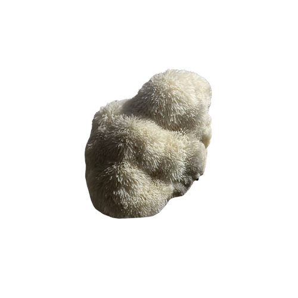
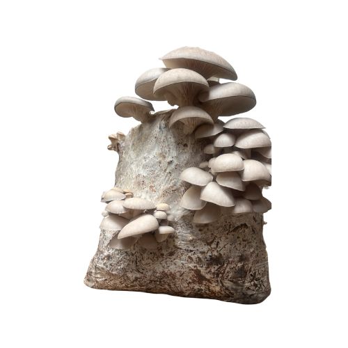
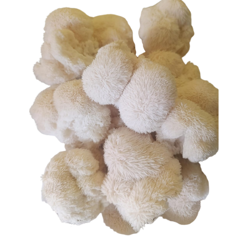
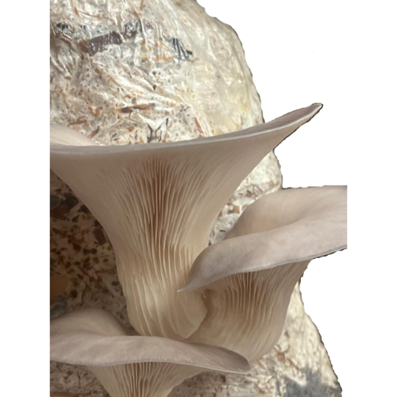

Champiñón blanco
El de siempre, el que va con todo: salteados, cremas, pizzas y ensaladas.
Fresco Setas de Juaica
Hacer pedido
¿Jugamos?
Setas de Juaica
Hacer pedido
¿Jugamos?
Setas frescas y sin conservantes, desde 2017. Para que cocines rico y sin complicarte.

cinco tipos de seta, todas frescas
El de siempre, el que va con todo: salteados, cremas, pizzas y ensaladas.
FrescoTierna y de sabor suave. Queda muy bien salteada con ajo o a la plancha.
FrescoSe deshebra como carne y es muy jugosa. La más curiosa de la familia.
FrescoGrande y carnoso. Va muy bien asado, relleno o en hamburguesa.
FrescoDe tallo grueso y firme, aguanta bien la parrilla y la sartén.
FrescoDe champiñón blanco y de portobello, hechos de forma artesanal. Para picar o acompañar.
Artesanal
cuidamos lo que comes y nos divertimos en el proceso
Llegan a tu mesa frescas, sin largas esperas.
Ingredientes simples y procesos artesanales.
Nada de conservantes, ni en las setas ni en los encurtidos.

para cocinar hoy o para vender mañana
Todos los tipos en fresco para tu cocina. Haces tu pedido y acordamos cómo te llega.
PedirPara restaurantes, tiendas y ferias. Los cinco tipos en la cantidad que necesites.
CotizarUna bolsa lista para que cultives tus propias orellanas en casa.
Quiero unorecetas y curiosidades, muy pronto
Estamos preparando recetas, trucos de cocina y datos curiosos sobre las setas. Si te asomas ahora, te recibe un aviso.
 Ir al blog
Ir al blog
te respondemos por WhatsApp


salta lo que se cruce en tu camino
Toca, haz clic o pulsa la barra espaciadora para saltar.
Llega a 3000 puntos y gana un 10% de descuento en tu próxima compra.